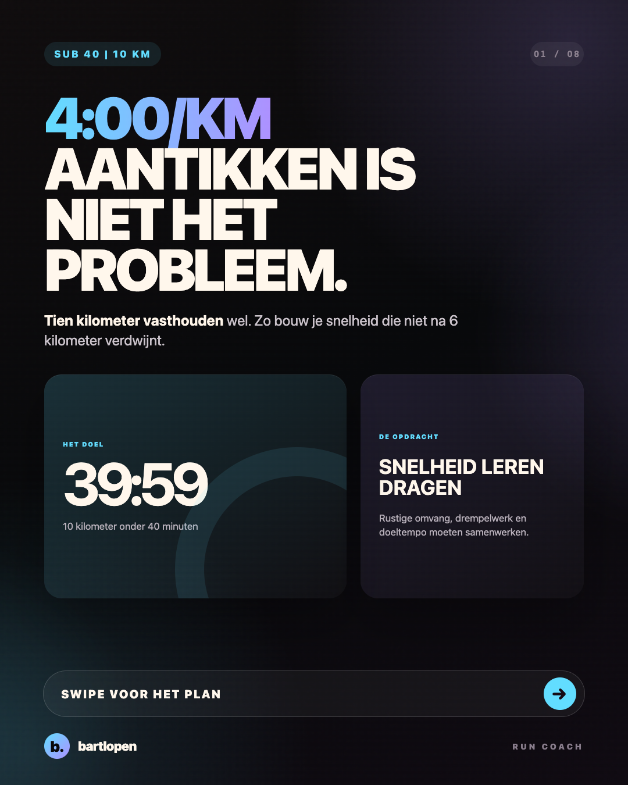
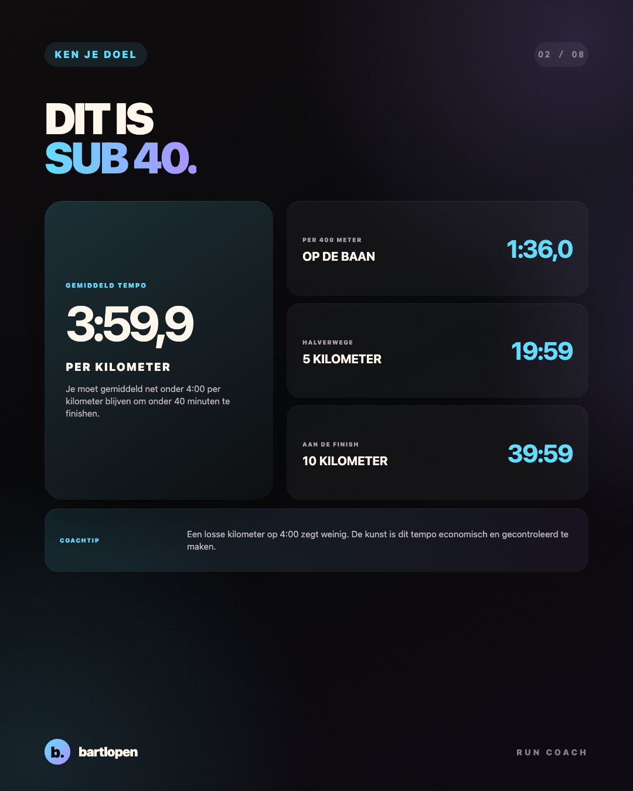
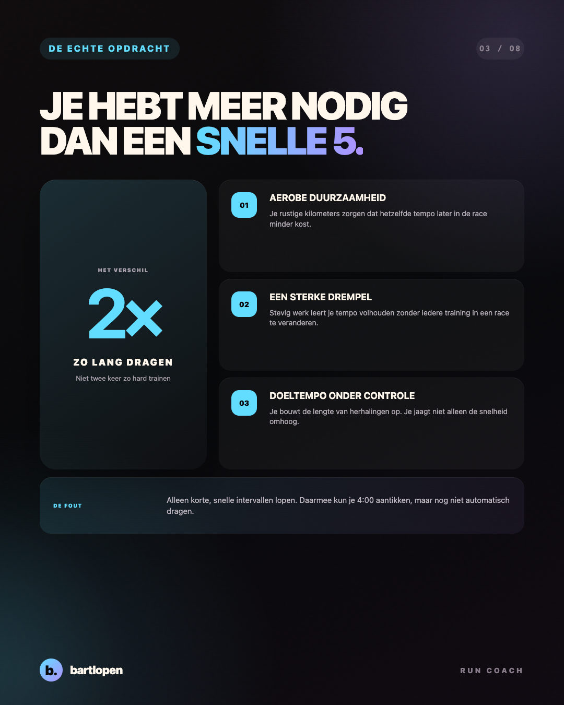
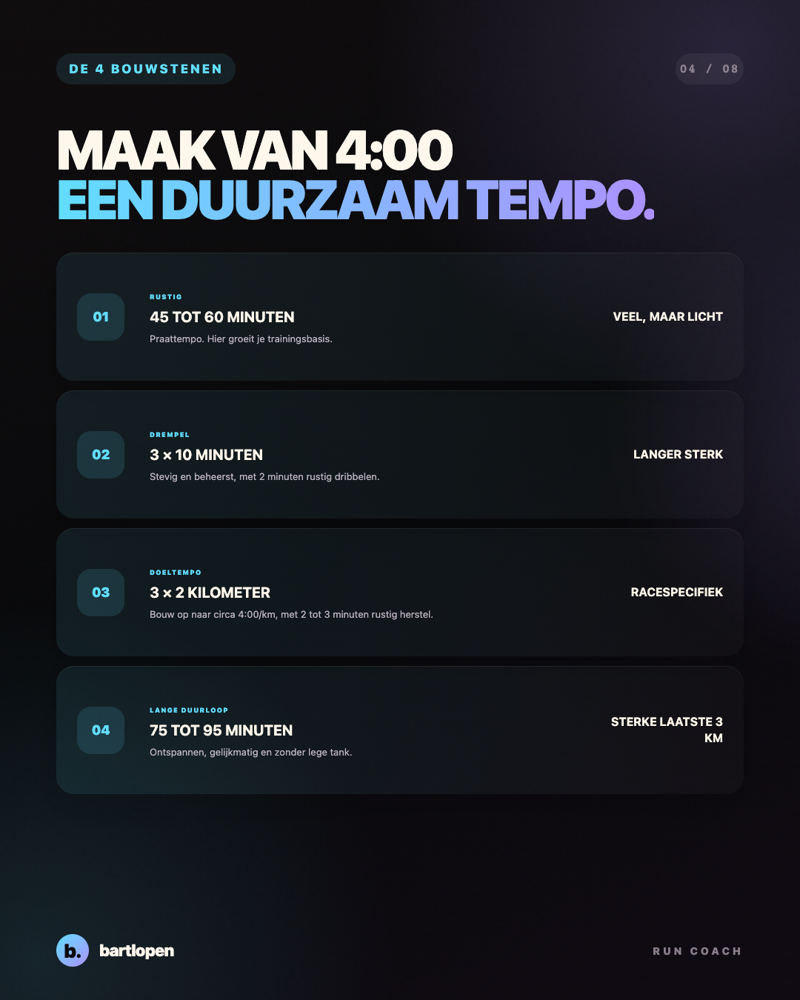
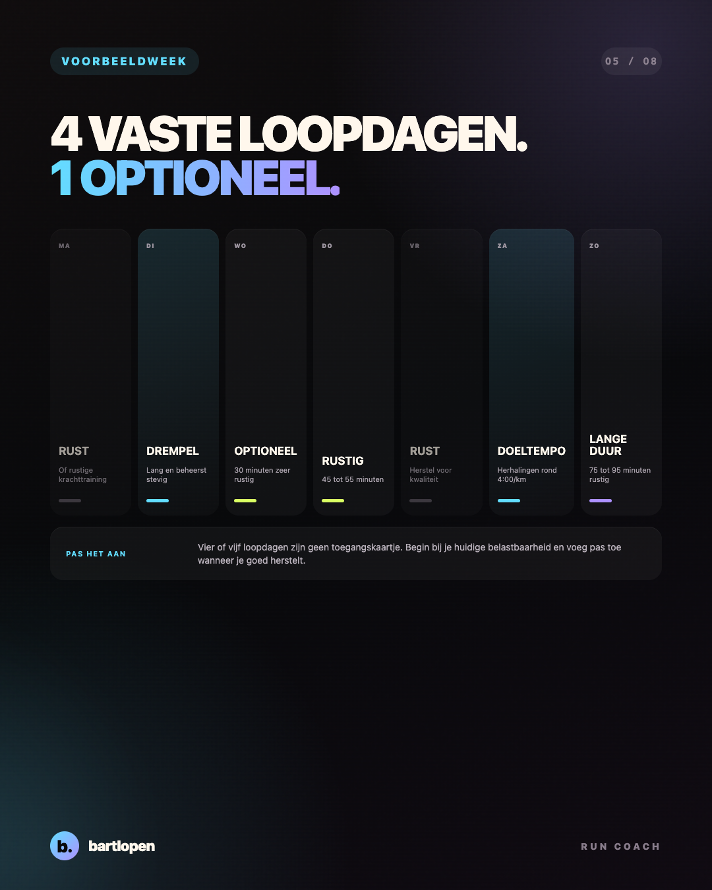
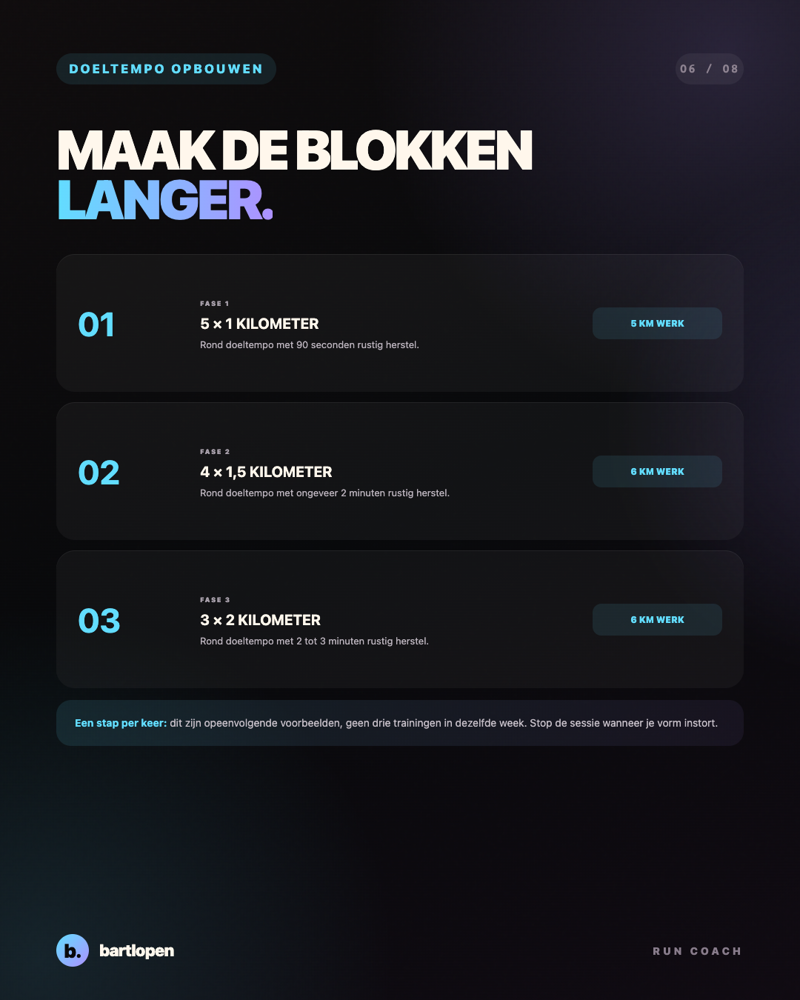
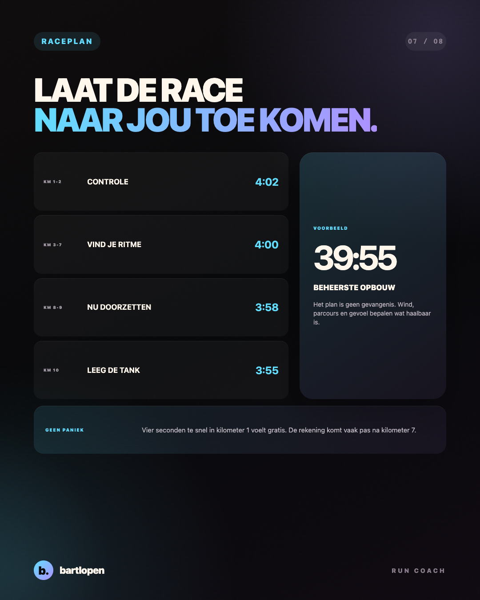
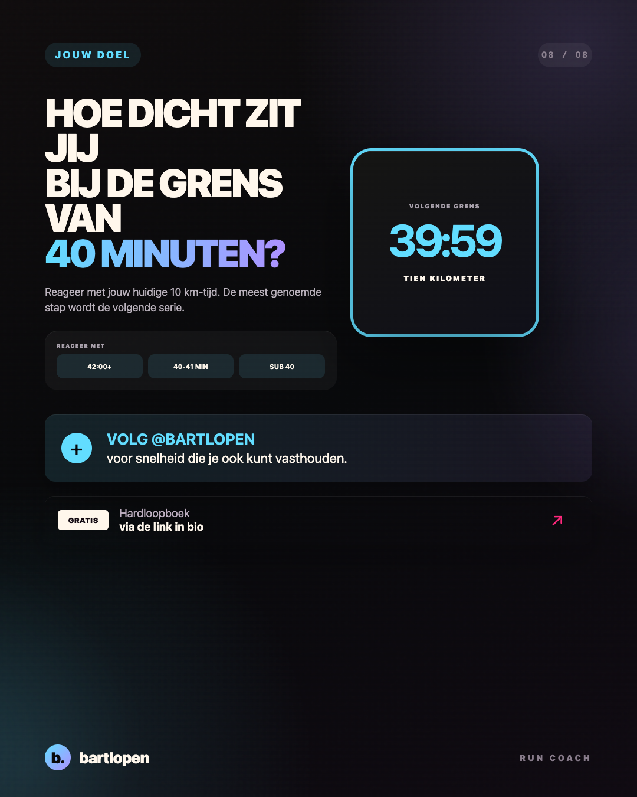

SLIDE 01 ↗Onder 40 minuten
op de 10 km
Acht praktische slides over duurvermogen, drempelwerk, doeltempo, een voorbeeldweek en slim racen.

SLIDE 02 ↗
SLIDE 03 ↗
SLIDE 04 ↗
SLIDE 05 ↗
SLIDE 06 ↗
SLIDE 07 ↗
SLIDE 08 ↗Caption
SUB 40 OP DE 10 KM? 4:00/KM AANTIKKEN IS NIET HET MOEILIJKSTE. 👀 De echte opdracht is dat tempo tien kilometer lang blijven dragen. Daarvoor heb je meer nodig dan korte, snelle intervallen: ✅ rustige kilometers voor je basis 🔥 langere drempelblokken voor controle ⚡ herhalingen rond je doeltempo 🧱 een rustige lange duurloop voor de laatste kilometers Een sterke opbouw kan gaan van 5 × 1 kilometer naar 4 × 1,5 kilometer en uiteindelijk 3 × 2 kilometer rond 4:00/km. Dit zijn opeenvolgende voorbeelden, geen drie trainingen in dezelfde week. Open je race beheerst. Vier seconden te snel in kilometer 1 voelt gratis, maar de rekening komt vaak pas na kilometer 7. Bewaar deze serie en reageer met jouw huidige 10 km-tijd. 👇 #hardlopen #10km #sub40 #hardloopschema #tempoloop #runningtips #bartlopen
Onderbouwing: een systematische review naar periodisering en trainingsintensiteit, een meta-analyse naar trainingsintensiteitsverdeling en een meta-analyse naar taperen. De trainingen zijn coachvoorbeelden en geen individueel schema.